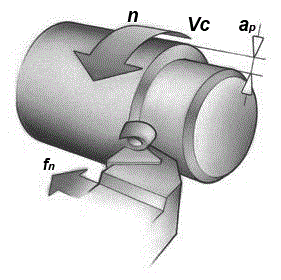
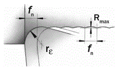

Заготовка вращается на станке с определенной частотой вращения шпинделя (n), т.е. с определенным количеством оборотов в минуту. Частота вращения шпинделя прямо соотносится через диаметр обрабатываемой поверхности со скоростью резания Vc, измеряемой в м/мин. Это скорость, с которой режущая кромка движется по поверхности заготовки.
Скорость резания является постоянной величиной лишь до того момента, пока частота вращения шпинделя или обрабатываемый диаметр остаются неизменными. При подрезке торца, например, когда подача инструмента направлена к центру заготовки, скорость резания будет постепенно изменяться при постоянной частоте вращения шпинделя. На современных станках с ЧПУ для того, чтобы сохранить постоянную скорость резания, предусмотрена возможность соответственного изменения частоты вращения шпинделя. Но при обработке очень маленьких диаметров и при максимальном приближении к оси заготовки, это компенсация будет неосуществима, так как диапазон скоростей станка ограничен. В том случае, если заготовка имеет перепады диаметров, конусную или криволинейную поверхность, скорость резания необходимо назначать с учетом этих изменений.
Подача (fn или s) в мм/об – это линейное перемещение инструмента за один оборот детали. Подача оказывает большое влияние на качество обработанной поверхности, а также на процесс стружкообразования. Она определяет не только толщину стружки, но и ее форму, в соответствии с геометрией пластины.
Глубина резания (ap или t) - это половина разности между обрабатываемым и обработанным диаметром, выраженная в мм. Глубина резания всегда измеряется в направлении перпендикулярном направлению подачи инструмента.
Режущая кромка подходит к детали под определенным углом, который называется главный угол в плане φ. Он измеряется между проекцией главной режущей кромки на основную плоскость и направлением подачи и является важной величиной, определяющей выбор токарного инструмента. Он влияет на формообразование стружки, на направление сил резания, на длину контакта режущей кромки с деталью и на возможности инструмента выполнять те или иные виды обработки. Главный угол в плане обычно изменяется в диапазоне от 45 до 95 град., но для профильной обработки может использоваться инструмент и с большими значениями угла в плане.
Главный угол в плане выбирается таким образом, чтобы инструмент имел возможность вести обработку в нескольких направлениях. Это обеспечивает ему универсальность и, как следствие, сокращение числа необходимого инструмента. Другим вариантом может стать выбор инструмента с большим углом при вершине, для повышения прочности режущей кромки за счет распределения давления по большей длине кромки. Это добавляет прочности инструменту в момент начала и конца резания, а также способствует сбалансированному распределению сил в процессе работы.
Для выбора и расчета режима резания – глубины резания, подачи, скорости, частоты вращения необходимы следующие данные о технологическом процессе:
– характеристика оборудования (мощность привода главного движения и подачи, ряды частот вращения, ряды подач и т. д.);
– характеристика металлорежущего инструмента (вид и тип инструмента, материал и геометрия режущей части);
– характеристика обрабатываемой заготовки (материал, структурное состояние, механические свойства, состояние поверхностей);
– размеры детали, припуски на механическую обработку, допуски и требуемая шероховатость обработанной поверхности.
Последовательность выбора режима резания: t → S → V → n,
где t – глубина резания, мм; S – подача, мм/об (при точении); V – скорость резания, м/мин; n – частота вращения, об/мин (мин-1).
Глубина резания ограничивается мощностью оборудования, жесткостью технологической системы, стойкостью режущего инструмента, и эффективной длиной режущей кромки.
Максимальная величина подачи при точении ограничивается радиусом при вершине, рекомендуется назначать подачу на оборот детали в два раза меньшую радиуса при вершине резца. Подача ограничивается также требованиями к шероховатости поверхности.
Величины подачи при продольном и поперечном черновом точении
| Радиус при вершине, мм | 0,4 | 0,8 | 1,2 | 1,6 | 2,4 | 3,2 |
| Максимально-допустимая подача, мм/об | 0,25 | 0,4 | 0,7 | 0,9 | 1,4 | 1,8 |
Величины подачи при продольном и поперечном чистовом точении и растачивании:
| Ra, мкм | Радиус при вершине пластины, мм | |||||
|---|---|---|---|---|---|---|
| 0,4 | 0,8 | 1,2 | 1,6 | 2,4 | 3,2 | |
| 0,8 | 0,07 | 0,1 | 0,12 | 0,14 | ||
| 1,6 | 0,11 | 0,15 | 0,19 | 0,22 | 0,3 | |
| 3,2 | 0,17 | 0,24 | 0,29 | 0,34 | 0,41 | 0,48 |
| 6,3 | 0,22 | 0,3 | 0,37 | 0,43 | 0,55 | 0,63 |
| 12,5 | 0,42 | 0,51 | 0,6 | 0,71 | 0,83 | |
| 25 | 0,75 | 0,87 | 1,07 | 1,24 | ||
Скорость резания выбирают в зависимости от следующих факторов:
1. Тип и твердость обрабатываемого материала. За эталон обрабатываемости принята сталь 45 твердостью 180НВ при изменении твердость в большую или меньшую сторону применяются повышающие или понижающие коэффициенты
Коэффициенты на скорость резания в зависимости от твердости обрабатываемого материала.
| Группа стали | ISO | SMS | HB | -60 | -40 | -20 | 0 | +20 | +40 | +60 | +80 |
| Конструкционная | P | 02.1 | 180 | 1,44 | 1,25 | 1,11 | 1 | 0,91 | 0,84 | 0,77 | 0,72 |
| Легированная | M | 05.21 | 180 | 1,42 | 1,24 | 1,11 | 1 | 0,91 | 0,84 | 0,78 | 0,73 |
| Чугуны | K | 08.2 | 260 | 1,21 | 1,13 | 1,06 | 1 | 0,95 | 0,9 | 0,86 | 0,82 |
2. Желаемый характер стружки.
3. Глубина резания и подача.
4. Жесткость технологической системы (станок – приспособление – инструмент – деталь).
5. Частота вращения определяется в зависимости от скорости резания и диаметра заготовки:
n = 1000•V / (π•D),
где V – скорость резания, м/мин; D – диаметр заготовки.